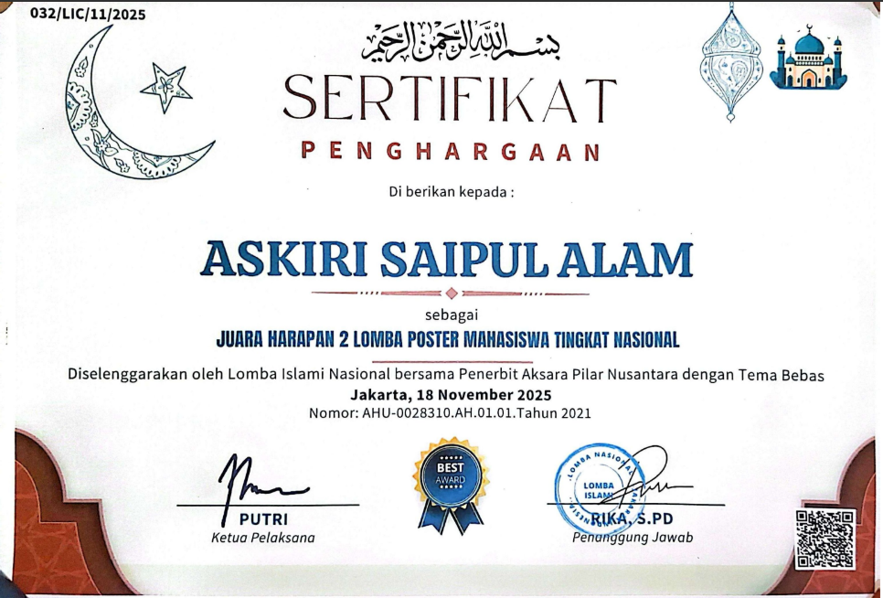

Hai, perkenalkan saya mahasiswa STT terpadu Nurul Fikri Prodi Sistem Informasi, saat ini saya aktif mengembangkan keahlian di bidang teknologi dan publick speaking.
View ProjectsSTT Terpadu Nurul Fikri
Fokus pada pengembangan web, basis data, dan sistem informasi berbasis teknologi.Ponpes DaQu Takhassus Depok
Fokus menghafal Al-Qur'an, belajar bahasa arab, dan paket C.SMP Tahfidz Qur'an RYDHA
Fokus pada pembentukan diri, belajar umum sambil mondok dan menghafal al-Qur'an.
Poster bertema umum dan di desain menggunakan canva